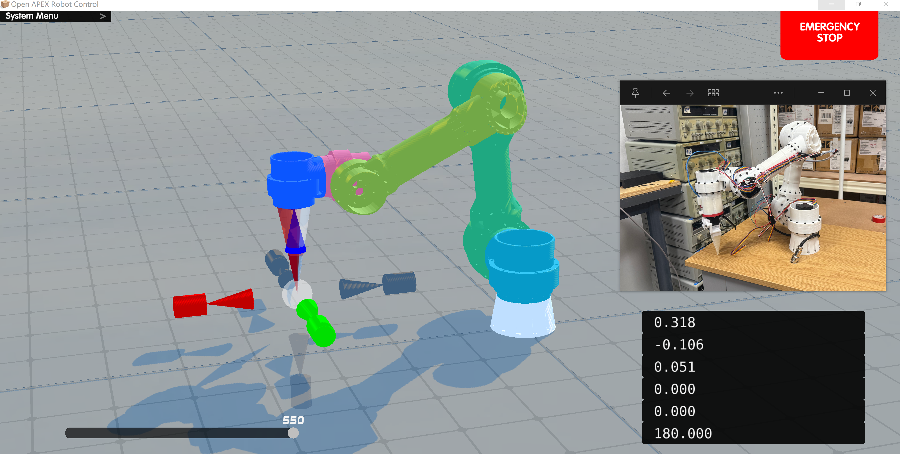
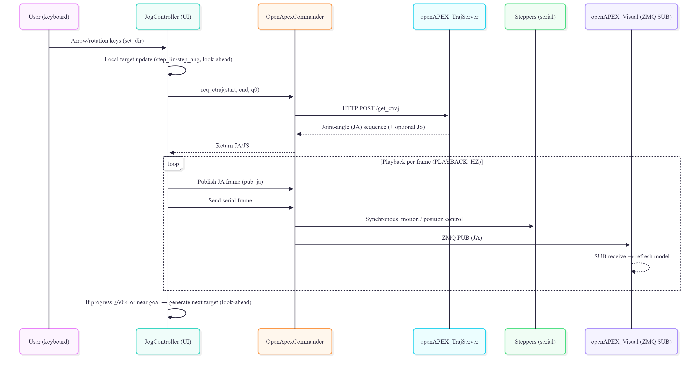
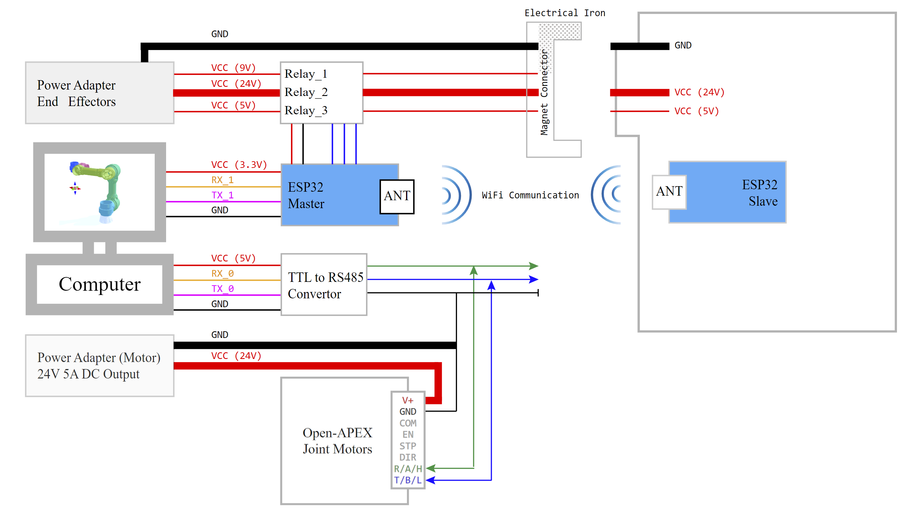
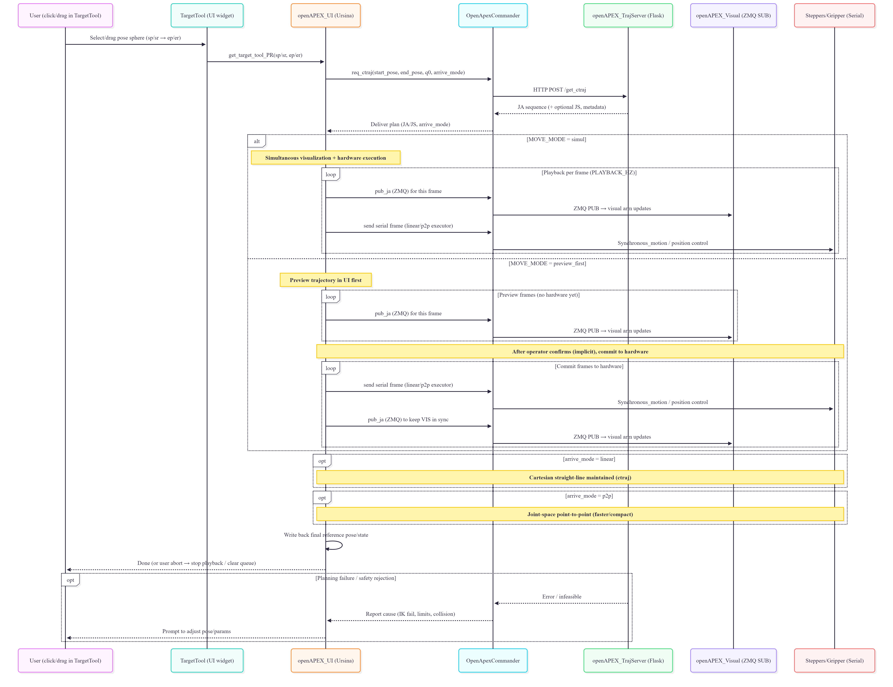

Open-APEX (Open-Sourced Affordable Printed Extensible eXchangeable-tool Robotic Arm) solves the trilemma of affordability, reproducibility, and extensibility. A deterministic control stack built on accessible 3D-printing.
Robotics platforms limit research when they force a compromise between cost and capability. Open-APEX breaks this barrier. We deliver a 6-DoF arm, strict deterministic safety, and an open VLA-ready pipeline—proving that affordability does not require sacrificing reproducibility or extensibility.
Designed to break the barriers of deployment in educational laboratories.
Hover and click anywhere across the overlapping geometric regions on the Venn Diagram to reveal mapping of current market solutions, their limitations, and where Open-APEX fits.
A complete 6-DOF robotic arm platform -- including structure, actuation, power, safety systems, and workspace furniture -- for less than the price of a single university textbook bundle.
| Category | Item | Unit Cost | Qty | Subtotal |
|---|---|---|---|---|
| Actuation System | ||||
| Joint Motors (with cable, bearing, MCU) | SGD 10 | 6 | SGD 60 | |
| Gripper Servo Motor | SGD 5 | 1 | SGD 5 | |
| Structure | ||||
| 3D Printed Parts (Full Set, PETG) | SGD 15 | 1 | SGD 15 | |
| Communication | ||||
| RS485-UART Converter | SGD 1 | 1 | SGD 1 | |
| Electrical & Power | ||||
| Aviation Connector | SGD 3 | 1 | SGD 3 | |
| Electromagnet (24V, demagnetization) | SGD 5 | 1 | SGD 5 | |
| 4-Channel Relay Module | SGD 8 | 1 | SGD 8 | |
| Emergency Stop Switch | SGD 5 | 1 | SGD 5 | |
| 230V to 24V Power Adapter | SGD 15 | 1 | SGD 15 | |
| Indicators | ||||
| 24V Indicator Lights | SGD 3 | 3 | SGD 9 | |
| 24V RGB Status Light | SGD 9 | 1 | SGD 9 | |
| Mechanical Setup | ||||
| PVC Pipe (3m) | SGD 12 | 1 | SGD 12 | |
| PVC Connectors | SGD 3 | 2 | SGD 6 | |
| IKEA Table | SGD 50 | 1 | SGD 50 | |
| Total | SGD 203 | |||
Examine the individual PETG structural components and joint configurations in real-time 3D.
Programming complex, non-trivial task sequences quickly and without writing code.
The objective requires absolute precision: sticking a blue gum stick onto a microscopic magnet perfectly, with absolutely no human interaction during runtime. We begin by verifying serial communications, enabling joint brakes, and safely recording the robot's physical Home Point.
Teaching by dragging. By simply clicking on the simulated Ursina 3D arm and dragging it to the desired coordinate, the physical robotic arm mirrors the movement flawlessly. We set our target waypoint directly in the virtual interface.
We choreograph the intricate end-effector steps: open grip, approach target, test structural repeatability by checking alignment, and closing the grip. Every individual action is logged as a sequential node in our task pipeline.
The sequence is locked. The system executes the entire trajectory: approaching the target wall, hitting the microscopic magnet, releasing the stick, retracting safely, and returning to the home position entirely autonomously.
Engineering-grade architecture distilled into a practical laboratory package.
Built on Practical Engineering. RS-485 daisy-chain routing, PETG chassis optimized for FDM -- affordable but uncompromising.
Open-APEX uses PETG for all structural links because it prints reliably on common campus FDM machines with a single slicing profile (0.4 mm nozzle, 0.2 mm layer height). Load-bearing regions use ribs; non-critical regions are hollowed. Total printed mass: 930.41 g. Filament cost for one arm: approximately SGD 15.
| Link | Length | Dia. | Material | Weight | Print Time | Fasteners |
|---|---|---|---|---|---|---|
| Link 0 | -- | -- | PETG HF | 55.81 g | 3h54m | 12 |
| Link 1 | -- | -- | PETG HF | 95.91 g | 6h15m | 16 |
| Link 2 | 300 mm | 50 mm | PETG HF | 302.83 g | 20h9m | 25 |
| Link 3 | 300 mm | 50 mm | PETG HF | 285.16 g | 21h16m | 24 |
| Link 4 | -- | -- | PETG HF | 95.35 g | 6h46m | 12 |
| Link 5 | -- | -- | PETG HF | 95.35 g | 6h46m | 12 |
All joints use identical 42 mm stepper motors (SGD 8 each) on a shared RS-485 daisy-chain bus. A single trunk carries 24 V power alongside the differential RS-485 pair, reducing harness size, connector count, and wiring mistakes. The brand is not critical -- any equivalent motor meeting the published specs may be substituted.
What You See Is What You Move. A flawless Digital Twin powered by Ursina -- drag on screen, robot follows.
The digital twin lets users move the end effector directly in 3D. When a target is dragged, the system solves inverse kinematics online and synchronizes the approved joint state to the physical arm. Users think in terms of tool position rather than individual joint angles.

To fuse the physical arm scene with the software scene, Open-APEX uses PnP (Perspective-n-Point) calibration to correct the camera viewpoint, making the two perspectives perfectly overlap. This video demonstrates the calibration process in action. The bottom-right panel displays the PnP algorithm's real-time estimation of the camera pose relative to the arm's Link 0 frame.
The jog loop creates a rolling short-horizon plan: each jog input creates a small target update, the UI requests a short trajectory from the Flask server, then streams the returned joint frames to both the visual model and the robot simultaneously.

Two execution modes are supported. In Simul mode, visualization and hardware move together frame by frame, minimizing the delay between what the operator sees and what the robot does. In Preview-First mode, the UI plays the motion in the digital twin before sending it to hardware -- useful for teaching and cautious operation.
Predictable Behavior in Unpredictable Workspaces. DLS-IK and target extrapolation reject unsafe commands.
The controller uses Damped Least Squares (DLS) inverse kinematics to remain stable near singularities. The IK step solved every control cycle:
Joints are always clamped: \(\mathbf{q}_{k+1}=\mathrm{sat}_{[\mathbf{q}_{\min},\mathbf{q}_{\max}]}(\mathbf{q}_{k}+\Delta\mathbf{q})\). For short final-approach motions, a distance-aware target extrapolation strategy prevents erratic proximal joint motion:
A distance-coupled joint regularization term further penalizes large proximal joints during close-range motions:
| Joint | Axis | Limits (deg) | Safety Notes |
|---|---|---|---|
| J1 | Y | [-170, +170] | 20 deg anti-twist margin for cable harness |
| J2 | X | [-90, +100] | Avoids excessive upward lift |
| J3 | X | [-130, +10] | +10 deg prevents mechanical interference |
| J4 | X | [-180, +180] | Most sensitive to cable torsion |
| J5 | Z | [-120, +120] | Balances task postures and bend radius |
| J6 | Y | [-180, +180] | Use back-and-forth to untwist |
Strictly Segregated Power Domains. 24V/5V/3.3V isolation guarantees fail-safe behavior.
Open-APEX uses three isolated electrical domains: 24 V actuation, 5 V differential communication, and 3.3 V logic. This limits fault propagation, simplifies debugging, and gives future modules clear connection points.

The 24 V supply enters a hard emergency-stop path before any software-controlled branch. After the E-stop stage, an 8-channel relay module distributes power across the actuation line, electromagnet release line, and status indicators. Three status indicators with NC-safe defaults make system state visible at the hardware level.
The arm-side harness is limited to just 5 conductors: Motor 24 V, Magnet 24 V, RS-485 A, RS-485 B, and Ground. Aviation-style keyed connectors prevent miswiring during maintenance. All grounds return to one power-adapter reference for clean signal integrity.
True Magnetic Quick-Release. Swap grippers, probes, and sensors without rewiring.
A magnetic electrical connector links the arm harness to the tool harness. After docking, the electromagnet locks Link-5 to the tool. The system then powers up in a strict sequence:
Undocking reverses the sequence: sensors and actuators stop first, then 24 V is cut, then 5 V, and finally the electromagnet is released. The electromagnet is configured as power-off magnetic / power-on release, so energy is used only for intentional tool release. A watchdog timer limits energisation time to prevent overheating.
The ESP32 Master controls three separate power rails for the end effector (9 V docking magnet, 5 V logic, 24 V tool power), communicating wirelessly with the ESP32 Slave mounted on the tool. This means tool changes never disturb joint-side control.
Solid green indicates normal arm operation with the end effector locked. When the yellow LED flashes, the electromagnetic locking mechanism demagnetises, allowing the end effector to be freely swapped. After 5 seconds the system automatically re-engages, securing the new tool in place.
High-Speed Module Synchronization. Flask + ZMQ IPC keeps the frame rate perfect.
The software is split into cooperating processes. The Trajectory Server (Flask) accepts a start pose, end pose, and initial joint config over HTTP. It generates a Cartesian path and solves IK to produce a joint trajectory -- kept stateless for on-demand replanning.
The Commander layer publishes joint-angle frames over a ZMQ PUB socket (:5557). Visualizers subscribe to the same channel for real-time mirrored views. Simultaneously, serialised motion frames are streamed to stepper drives over dedicated serial managers. This separates fast visualization traffic from deterministic hardware traffic.

Safety is enforced at every module boundary: the UI validates commands before any hardware frame is sent, the Commander only transmits approved frames, and the physical E-stop remains the final fallback. Because executed frames are also shown in the visual stream, the operator always sees what the robot is about to do.
Experience the entire autonomy loop, from human intent to physical actuation. Click any stage to jump to the corresponding moment in the demonstration.
Open-APEX is built in the open. Every contribution -- from a one-line typo fix to a new end-effector module -- helps the platform grow.
Found a bug, unexpected behaviour, or a documentation gap? Open a GitHub Issue so the community can track and resolve it.
bug, docs, enhancementReady to contribute code, firmware, CAD files, or documentation? Submit a Pull Request following these guidelines.
mainA healthy community is built on mutual respect and clear communication. Please follow these principles.